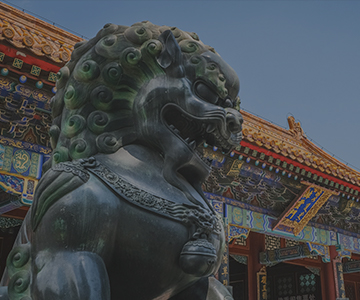
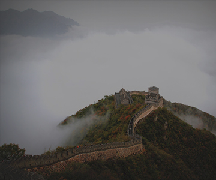

Bienvenidos a Beijing
En Beijing, los ecos del pasado y el ritmo frenético del presente se entremezclan para crear una combinación apasionante. Extraordinarios palacios imperiales y sublimes templos comparten espacio con vanguardistas edificios modernos, todo amenizado con una enorme variedad de restaurantes y una gran oferta comercial. Por encima de todo, Beijing es una ciudad con una energía imparable, digna de la capital de esta nueva superpotencia mundial.
Museos y galerías
 ver masMuseos y galerías de última generación
Para estar a la altura de su nueva condición de ciudad de talla mundial, Beijing no ha escatimado esfuerzos para poner al día sus museos y galerías de arte. Actualmente Beijing puede presumir de ser uno de los principales centros de arte contemporáneo del mundo, además de contar con museos que abarcan desde la arquitectura antigua hasta el sándalo.
Arquitectura
ver masArquitectura sin igual
Pocas ciudades en el mundo pueden igualar la extraordinaria mezcla de estilos arquitectónicos de Beijing; en pocos minutos, se pueden recorrer seis siglos de arquitectura. Desde los ostentosos diseños del realismo socialista de la década de 1950 hasta las atrevidas y vanguardistas estructuras actuales, la arquitectura moderna de Beijing es todo un deleite.
Actividades
 ver masPosibles actividades
Beijing ofrece gran cantidad de actividades como recorrer la gran mulla china, visitar sus majestuosos templos, ver los impactantes shows artísticos en sus teatros, conocer el barrio antiguo Hutongs o descansar un poco del bullicio de la ciudad recorriendo sus grandes parques y jardines.